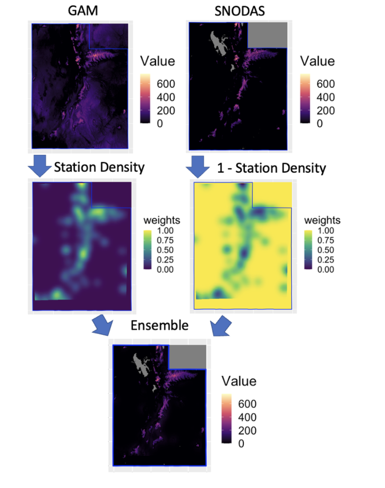
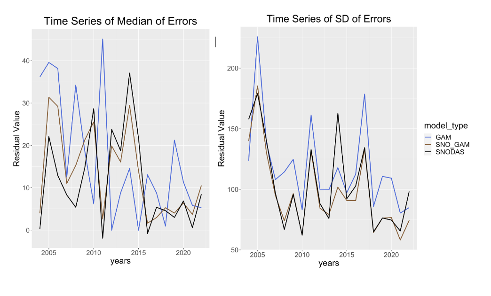

M.S. Statistics with 3+ years at Myriad Genetics. I believe every dataset has something to say — my job is to listen, translate, and help people make better decisions with what the data reveals.
Work ranging from computer vision and geospatial analysis to medical research and machine learning.
Building computer vision models to detect player positions and track ball location relative to the court in pickleball gameplay footage. Applying object detection and tracking algorithms to bring sports analytics to a rapidly growing sport that lacks the analytical infrastructure of established leagues.
Created an R GitHub package (rsnodas) that allows users to access national gridded data (PRISM and SNODAS), create their own model, and utilize SNOTEL locations to combine with national gridded products to make their own predictions. This allows users to create more models and explore ways to improve predictions of SWE in Utah.


Compared Random Forest, Neural Networks, SVM, and KNN for multi-class prediction of crash injury severity (None/Minimal/Minor/Major/Fatal) on ~10K imbalanced records. Explored class imbalance handling and model performance trade-offs across methods.
Collaborative analysis of Los Angeles crime patterns using Kaggle data and Google Maps API. Built custom spatial bins to map crime density for car theft, battery, petty theft, and assault with a weapon across LA neighborhoods.
End-to-end Python ML pipeline using Telco Churn data: EDA, feature engineering, model comparison (XGBoost, Logistic Regression, Random Forest), SHAP explainability, and actionable retention recommendations.
3+ years applying statistical methods to clinical genomics research.
I'm actively seeking data scientist roles. I'd love to discuss how my statistics and ML experience can benefit your team.